Плагин Auto Fx (часть 6)
Категория эффектов Mystical Tint Tone & Color (Мистическое подкрашивание оттенков и цвета)
В категории Mystical Tint Tone & Color (Мистическое подкрашивание оттенков и цвета) столько фильтров (рис. 1), что от их многообразия глаза разбегаются.
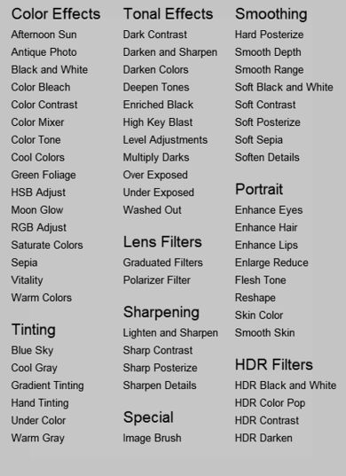
Даже при беглом взгляде на этот список, становится ясно, это фильтры, которые присутствуют в Photo-Paint, в меню Adjust (Настройка) и Effects (Эффекты).
Поэтому часть из них можно не использовать или использовать в тех случаях, когда работа с плагином удобней, чем с фильтрами Photo-Paint или эти фильтры предоставляют больший выбор параметров.
В этой категории, как и в предыдущих, фильтры разбиты на группы, которых в этой категории девять штук.
Т. к. многие из этих фильтров делают то же самое, что и фильтры Photo-Paint, часть из них я не буду описывать или расскажу кратко, т. к. работа с ними и так будет понятна для пользователей Photo-Paint.
Группа фильтров Color Effects (Цветовые эффекты).
В этой группе 16 фильтров. При просмотре списка этих фильтров, становится понятно, что они заточены на изменение цвета, либо его коррекцию, для создания определенных эффектов.
Фильтр Afternoon Sun (Вечернее солнце)
В очередной раз поражаюсь разработчикам этого плагина. Они не поленились придумать фильтры практически на все случаи жизни и наверно учли все мелочи, чтобы облегчить жизнь пользователям. На каждый случай – свой отдельный фильтр. То же самое можно сказать и о фильтре Afternoon Sun (Вечернее солнце). Окно фильтра показано на рис. 2.
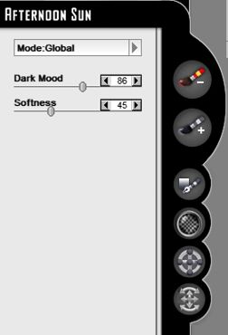
Этот фильтр может работать в двух режимах, Global (Глобальном) и Brush On (Кисть), отсюда и большое количество инструментов в боковой части фильтра. Выбор режима, как обычно, делается в выпадающем меню Mode (Режим).
А сейчас небольшое отступление от темы. Это отступление связано с названием ползунка Dark Mood. Хитрость в том, что если заглянуть на перевод слова Mood в словаре, то вы обнаружите там значение этого слова – Настроение. Как-то «пристроить» Настроение к названию ползунка… несколько нелепо. Однако Оксфордский толковый словарь английского языка более конкретно описывает значение слова Mood. На самом деле это слово (одно из его значений) означает атмосферу работы в искусстве. Теперь название ползунка становится более понятным Dark Mood – Темнота атмосферы, а может лучше сказать Мрачность атмосферы. При этом понятно, что атмосфера в этом смысле больше означает настроение, а не окружающую среду. Понятно, что картина в более темных тонах, означает чаще всего мрачную атмосферу (настроение). Более яркие и теплые цвета, создают жизнерадостную атмосферу. Что-то в этом роде. Но я решил все-таки «обозвать» этот ползунок, как Темнота атмосферы. Это небольшое отступление от общей темы также связано с тем, что в разных фильтрах плагина очень часто встречается именно этот термин – Mood.
Итак…
Ползунок Dark Mood (Темнота атмосферы) – определяет величину затемнения и степень проявления эффекта или другими словами, «мрачность атмосферы».
Ползунок Softness (Мягкость) – регулирует яркость изображения и величину размытия.
Чтобы теперь понять, о чем мы тут все время говорили, рассмотрим действие фильтра с значениями по умолчанию. На рис. 3 показано исходное изображение (сильно уменьшенное и с более низким разрешение, чем у оригинала).
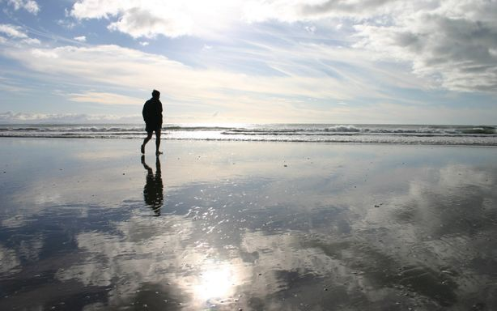
А на рис. 4 это изображение после применения эффекта.
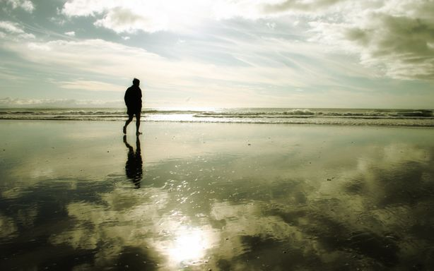
Как на мой взгляд, достаточно интересный эффект и получен за пару секунд.
Набор инструментов, сбоку окна фильтра, говорит о возможности гибко управлять проявлением эффекта в изображении. Наличие инструмента Gradient Path (Путь градиента) позволяет задать направление эффекта, а инструмент Create Ellipse (Создать эллипс) сделать эффект наподобие виньетки.
Остальные инструменты вам знакомы по работе с другими фильтрами.
Фильтр Antique Photo (Старинная фотография)
Хотя название фильтра громкое, но эффект от его применения не очень меня впечатлил. Может из-за того, что я ожидал от него чего-то большего.
Тем не менее, наворотов в этом фильтре достаточно много, что наводит на мысль о том, что всегда найдется место для его достойного применения.
Окно фильтра показано на рис. 5.
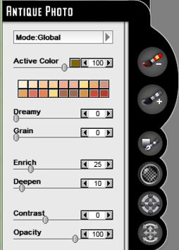
Фильтр Antique Photo (Старинная фотография) может работать в двух режимах, Global (Глобальном) и Brush On (Кисть). Ползунок Active Color (Активный цвет), с указателем цвета в правой части, задает интенсивность цвета, оттенок которого будет придан изображению.
Ниже расположена маленькая палитра, для быстрого доступа к некоторым цветам. Однако, скорее всего вам ее будет недостаточно.
• Ползунок Dreamy (Мечтательность) – позволяет добавить в изображение легкую размытость.
• Ползунок Grain (Зерно) – добавляет в изображение зернистость, позволяя дополнительно придать фотографии более старый вид.
• Ползунок Enrich (Обогащение) – отвечает за количество черной составляющей, добавляемой в эффект. Проще говоря, при добавлении черного компонента, изображение становится более контрастным, а тени более глубокими. В старых фотографиях, которые по закону жанра, не были цветными, черный цвет (или темнота оттенков) играли важную роль.
• Ползунок Deepen (Глубина) – позволяет контролировать глубину цвета в темных областях изображения.
• Ползунки Contrast (Контрастность) и Opacity (Непрозрачность) выполняют ту же функцию, что и во всех прочих фильтрах и пояснений не требуют.
На рис. 6 показано исходное изображение (сильно уменьшено).
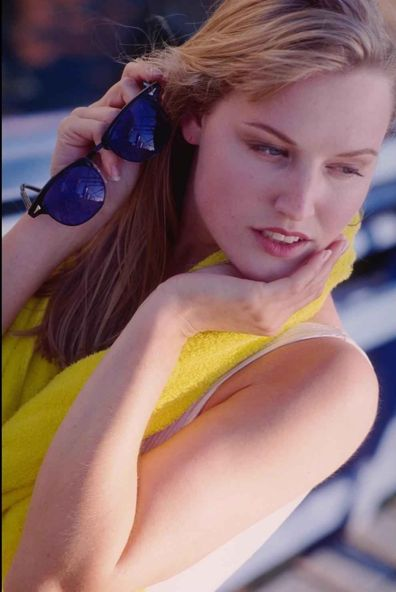
Применим к нему фильтр Antique Photo (Старинная фотография) с параметрами, как на рис. 7.
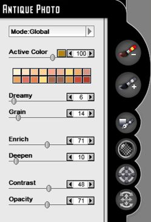
Зададим цвет (рис. 8).
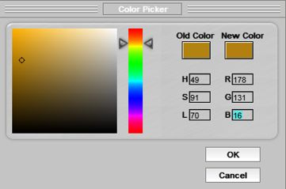
В результате получим эффект, как на рис. 9.
Боковые элементы управления позволяют создавать довольно занятные комбинации, например, плавный переход цветного фото в «старинное». Сами же эти элементы управления вам знакомы и останавливаться на их описании я не буду.
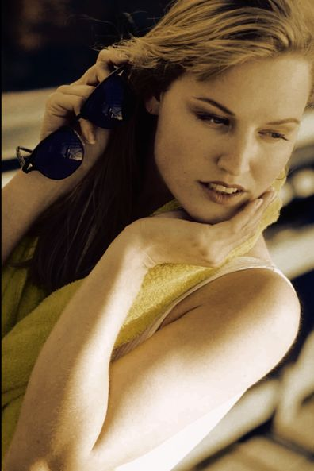
Собственно говоря, на эффект сепии это точно не похоже. А с другой стороны, чтобы получить желаемый результат от этого фильтра, потребуется определенная тренировка в подборе его параметров.
Фильтр Black and White (Черно-белое фото)
Здесь для пользователя Photo-Paint не будет никаких загадок и сюрпризов. Фильтр Black and White (Черно-белое фото) преобразует изображение в оттенки серого. Однако взглянув на окно фильтра (рис. 10), можно прийти к простому выводу – здесь в одном фильтре собраны элементы управления, которые в Photo-Paint разбросаны по разным фильтрам. Другими словами, в плагине можно получить эффект, для получения которого в Photo-Paint, необходимо было бы задействовать большой арсенал инструментов.
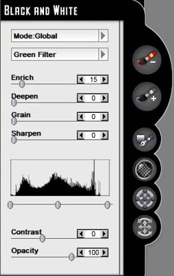
И хотя в самом Photo-Paint получить похожие результаты довольно не сложно, но возможность работы фильтра в режимах Global (Глобальном) и Brush On (Кисть) дают ему неоспоримые преимущества. Например, в фильтре можно без труда получить эффект, как на рис. 11.
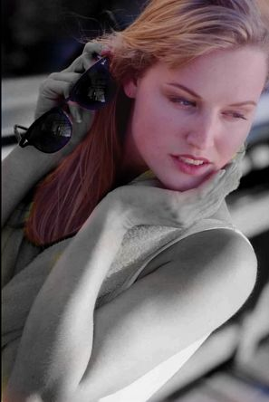
Я на скорую руку обработал фото инструментом Brush On (Кисть), что заметно по небольшим недокрашенным участкам на пальцах. Но суть понятна. Частенько можно встретить подобные эффекты, типа черно-белого портрета, но с цветными губами и глазами. В Photo-Paint пришлось бы создавать маску или делать другие телодвижения, в фильтре же это сделать намного проще.
Прочие фильтры группы Color Effects (Цветовые эффекты)
Если вы внимательно присмотритесь к списку не рассмотренных нами фильтров, то легко заметите, что у всех них, есть прямые аналоги в Photo-Paint, которые позволяют делать то же самое, не прибегая к помощи плагина. И только в некоторых случаях, более удобно все же будет работать с плагином, а не в Photo-Paint. Поэтому описывать эти фильтры и подбирать примеры, чтобы показать те же результаты, что и в Photo-Paint, не вижу смысла.
Конечно, в каждом из этих фильтров есть маленькие хитрости, которые добавляют им гибкость в работе и дают небольшое преимущество перед Photo-Paint, именно в удобстве, но не более того.
Исходя из только что сказанного, я закончу рассмотрение фильтров этой группы.
Фильтры группы Tinting (Оттенение)
Все фильтры этой группы работают примерно одинаково, пожалуй за исключением фильтра Gradient Tinting (Градиентное оттенение). Само слово оттенение в контексте работы фильтров означает придание какого-либо оттенка в изображении или может лучше было бы сказать, тонирование.
Практически все фильтры при выборе параметров по умолчанию, обесцвечивают изображение, а затем с помощью выбора цвета в фильтре, можно придать тот или иной оттенок. Хотя, в случае применения их в режиме Brush On (Кисть), гораздо проще найти им применение, т. к. обесцвечивание изображения, как правило не входит в наши намерения.
Мне кажется, что более приемлемый вариант использования этих фильтров, это небольшая доработка изображения (тонирование) при выполнении основной части работы в самом Photo-Paint.
Т. к. я не придумал ничего толкового, в плане использования этой группы фильтров, то описывать их не буду, а достаточно скромный набор элементов управления в них, позволит вам без труда разобраться самостоятельно в работе с ними.
Фильтры остальных групп в категории Mystical Tint Tone & Color (Мистическое подкрашивание оттенков и цвета).
Как я уже сказал в начале урока, большинство фильтров этой категории имеют свои аналоги в Photo-Paint, точно также работают и дают такие же результаты. Поэтому не вижу смысла писать о тех же инструментах, которые итак есть в арсенале пользователей Photo-Paint.
Конечно, выбор останется за вами, пользоваться фильтрами в Photo-Paint или прибегнуть к услугам плагина.
На этом я закончу серию уроков о пакете фильтров Mystical 2 в плагине Auto FX. Если у вас возникнет потребность или желание рассмотреть набор фильтров DreamSuite Ultimate, то оставляйте свои пожелания в комментариях к уроку.